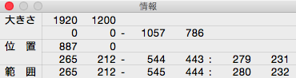

The Information Window
This window work that depict certain informations of current document.

Size
This field depict size of image(width and height) and view position of image(left, top, right and bottom).
Position
This field depict pointer position. In addition to when create shape(line, rectangle, ellipse or parallelogram), also depcit such shape each axis(left, top right and bottom) and size(width and height).
Area
This field depict each axis(left, top, right and bottom) and size(width and height) when made selection area on the main window.